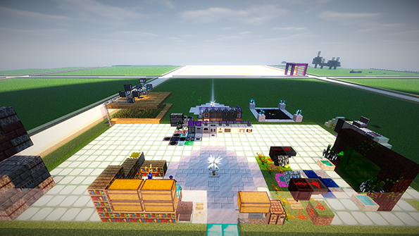
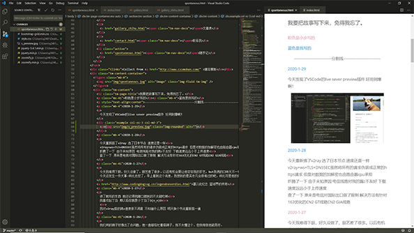

故事不长，也不难讲；
你想听，我慢慢讲给你。
QAUCodingDog
Subscribe me On Github
我要把故事写下来，免得我忘了。
你来了，故事一直在写，请慢慢看。
粉色是哒哒写的
蓝色是我写的
[置顶] 2020-7-6 - 2020-7-9
郑郑和哒哒从黄岛玩到市南 坐了13′14″的摩天轮 吹了温柔拂面的海风 赏了五四广场的夜景 观了麦岛迷人的海景 一起给未来的我们写信 一起窝在被子里看电影 一起吃了好吃的鳗鱼饭... 最终发现 我们真的很爱对方
7月6号结束地下恋情这天 网站的访问率炸了 哈哈哈 好开心
2020-12-28
网址部署到阿里云服务器 速度快多了
2020-10-1
“双向奔赴才有意义”，哒哒如是说道。“真爱都是用真心换来的”，这句话我今天真真切切地理解了
2020-7 - 2020-8
用三丰云开了一个我的世界服务器 和哒哒一起玩
2020-5-20
安利一款网站高亮代码的js
highlight.js
ps: 520快乐 @哒哒
2020-4-30
安利一个分享鼠标的软件
ShareMouse
我的Windows和
MacOS终于可以用一个鼠标控制了！
2020-3-6
今天把网站的鼠标指针换掉了
增加了一个趣味的Emoji js 是从
Github
djzhao627这抄来的
2020-2-27
晚上爸爸给我讲了他和老妈恋爱的故事 那个年代谈恋爱真纯粹 原来他们年轻时那么浪漫 只不过后来都变成柴米油盐。
据小道消息我的假期可能又要增加2个月 那就在家好好享受春天吧 春天过了就能见到郑郑啦。
2020-2-24
疫情 消息封锁 防火墙高得离谱 封杀严重 没有过硬的技术就不重复搭梯子了 等这段时间过去吧
这段时间没更新网站的原因是,,,在肝我的世界 =w=


2020-2-5
把网站放在百度和必应上推广了 也想放在谷歌上 失败告终
Github托管的博客强制https访问是很傻的决定 证书在Github 每次建立连接比步履蹒跚的老头还慢
2020-2-2
听说今天是对称日，所求皆吾愿，所盼皆吾期。今天尝试做了蛋糕，感觉还不错。我觉得他可能更喜欢脾气爆点的女孩，嗯，以后我得凶一点。
2020-2-1
二月的第一天，失眠。起来背了背单词，4点才睡的，以后没事的话就多多背单词吧，得做一些有意义的事。
立一个flag，从今天开始不熬夜了，23:30之前睡觉，我应该能做到吧。
2020-2-1
OneNote今天重新配置了 相比起前两天糟糕的体验 这次还不错 不过对图片不太友好 文字和画图还是蛮和谐的
2020-1-30
在家这几天好无聊呀，想回学校，想念我的小姐妹，想见到他。希望疫情快点结束吧，我一点都不喜欢戴口罩。
2020-1-30
表扬一下这个大半夜不睡觉还在等我的小丁当

2020-1-29
今天发现了VSCode的live sever preview插件 好用到爆啊！

今天还抄了图片放大的功能 加油喽
2020-1-28
今天重新搭了v2ray 选了日本节点 速度还是一样
v2ray+ws+TLS+DNSSEC虽然将所有的请求伪装成正常的https请求 但是对数据的加解密也由路由器cpu承担
折腾了一下 由于未知原因 电信线路对我的踢z不友好 下载速度远远小于上传速度
查了一下 原来是电信对国际出口做了限制 解决方法有针对163优化的CN2 GT线路CN2 GIA线路
2020-1-27
今天我难得下厨，好久没做了，厨艺差了很多。以后有机会要让他尝尝我的手艺，but我俩的口味大不一样，我记得他好像不能吃辣。
今天还发生一件大事:科比去世了，早上看到这个消息，我想到的是吴亦凡会很难过的吧，科比可是他的偶像呢。
2020-1-27
读了她写的东西 她还记得我随口提到的不太能吃辣
我对v2ray搭的踢z速度很不满意 不知道什么原因 明天换个节点重新搭一遍
2020-1-26
我们用的踢子好像出了点问题，他一直都在忙着搭踢子，我不太懂这个，但我相信他能弄好。
2020-1-26
最近因为病毒的原因，tz的速度很慢...陆续搭了几个SSR都挂了 折腾了一下午 花了1.18$买了外国的域名 搭了v2ray 速度还是很慢
ps: 武汉加油 奥里给
2020-1-25
这里下大雪了诶，这里得有十年没下雪了吧！瑞雪丰年，岁岁欢愉，年年胜意，一切都会好的。
他QQ一整天都是请勿打扰，好想给他发消息呀，但我怕会打扰他，他都在干什么呢？
2020-1-24
今天是除夕啦，忙了一整天，我太困了，12点一到我就睡着了，诶，醒来都是2点过了，明年还会有机会在0:00给他发新年快乐的吧。
2020-1-24
Microsoft Edge可以用插件啦 我直接抛弃Google Chrome垃圾浏览器 哼(￢︿̫̿￢☆)
2020-1-23
他告诉我他的演讲过了，害，我就没想过他会挂，所以今年我们都没挂科，可以安心过年啦。下学期继续加油！
2020-1-23
安利Pydroid3这款app 用下面这几行代码实现了二维码生成~
import qrcode
url = input('url:')
img = qrcode.make(url)
img.save("/storage/emulated/0/Pictures/Screenshots/url.png")
我的演讲63分过了 在这里 我为感谢席晓老师 给您磕头上香！长命百岁！
2020-1-21
他今天买了个域名，我可以把想写的东西发给他，我当时脑子里想到的这是这些，想写下我想到关于他的，故事还长，以后慢慢写。
2020-1-21
今天买到了codingdogzxg.cn这个域名 备案秒过 开心
小本本记下来 这段是css p标签自动换行的呀 这一段就是用了这个css哦~
.nav .information .chunk .content {
width: 100%;
height: auto;
word-wrap:break-word;
word-break:break-all;
overflow: hidden;
}
2020-1-18
我今天惹他生气了哦，他一整天都没理我，我不该在他伤口撒盐，他没理我我也好失落的，我已经向他保证了，以后不惹他生气了。
2020-1-17
今天买了vultr的服务器 自己搭了tz 1000G的带宽根本用不完嘛汪。
2020-1-11 - 2020-1-17
我回家了，愉快的寒假开始liao，和他表白以后心里也没有胡思乱想，开心。
2020-1-9
和朋友出去喝了酒，睡不着，干脆我跟他说完得了，学期要结束了，这件事也要弄明白吧，其实之前想要考完试当面说的，没想到他早上考完，中午就回家了，诶，也好，当面我可能就说不出来了。
2020-1-1 - 2020-1-6
又到了每个学期最痛苦的考试周了，这段时间没和他去自习了，我不联系他，他也不会主动联系我，哼，生气，男生不主动就是答案，他可能是不喜欢我吧，这段时间给我的感觉就是我在打扰他，有时候在心里劝自己放下，可还是有点舍不得。6号青岛初雪，好想跟他说我喜欢他呀，但是还有考试呢，无论他的回答是什么都会影响我，算了，考完试再说吧。
2019-12-2 - 2019-12-27
这段时间里我都会叫上他和我去图书馆自习，他有时候会有事，我还是会一个人也去，和他去自习还是很开心，有时候坐他对面，我还会偷偷看他，他应该不知道。在回宿舍的路上还会闲聊，我觉得我在他面前不太像我原来的我，我在朋友面前是一个说话有趣，很有梗的女生，诶，他会觉得我无聊吧。
2019-12-2 - 2019-12-27
Fuck泡芙老师 演讲考试♂死了 我服了
2019-11-27
今天选修课最后一节课了，论文他帮我打印了，他说帮我交上去，我可以不用去了，但我想去见他，他头发长了好多，和他再坐一块，感觉好像有点紧张。他送我回宿舍了，因为我喜欢吃糖，所以我想给他一把糖，但他只挑了两颗，什么味忘了。
2019-11-23
他今天联系我了，说让我带他自习，我没有一点犹豫答应了。
2019-10 - 2019-11
这期间里我们各过各的生活，选修课他也一节没来上，我去的次数也不多，我有时还是会联系他，但都是一些无关紧要的问题，青农虽不大，我却几乎忘记了他的模样。
2019-9-26 - 2019-8-28
我们之间的联系好像没前几天频繁了，我很迷惑，去找他问清楚，原来是他觉得他没完全放下过去，这样继续对谁都不负责。既然还没放下过去就不找他了，有点难过。
2019-9-25
我今天和他一起去上课，我们两节课都在听歌，他学的英语好像有点难，我英语很菜。
2019-9-25
这个女孩子竟然觉得发展太快 她好像没有概念 那就慢一些吧
2019-9-22 - 2019-9-24
每天都能收到他的早安和晚安，我很开心呐，他在校外做兼职，那段时间我一直忙院里的事，他那天做完兼职，我还在生物楼里忙着，他说要送我回去，在生物楼西面等我，有点开心，还能见到他，但我一出生物楼，分不清东西南北，诶，最后我打QQ电话给他就在教学楼A区等他，也不知道他有没有嫌弃我。他那天还摸了我两天没洗的头。
2019-9-22
开学以后仍然在兼职 我暑假已经把自己卖给肯德基了 Fuck
2019-9-21
我俩见了面，在五环坐着聊天，还挺聊得来的，说实话见面之前我还怕没有话题尴尬，然而并没有。上次在选修课记住的他的样子有点模糊，这次认真看了，嘻嘻，他笑起来有点好看。哦，对了，回去以后他还说今天的日期很好记。
2019-9-21
选修课上认识了一位女孩子 她从知乎上关注了我 我们在五环溜达了一会 我给她买了维他
2019-9-19 - 2019-9-20
我们在微信聊得挺好的呀，嘻嘻，他也有一个有趣的灵魂，通过这两天的了解，我知道他喜欢计算机还有一点小懒惰，他之前可能还度过一段黑暗的时间，我觉得没关系呀，我会让他改变的。
2019-9-18
我和朋友选了一门选修课，那是我第一次去上课，踩着铃声我进了教室，慌忙中找到了朋友的位置坐下，此时他已经在讲台上准备开始讲PPT，我忙着喘气，也顾不上他的自我介绍，我从PPT上关注了他的知乎，他还挺佛系的，找了个话题在知乎私聊他，得知他单身，我成功要到了他的微信，开心，这是我第一次向男生要微信，害羞。
2019-9-18
我选了的选修课 要讲PPT 我懒得做了 就让组员做 我讲 谁让脸皮厚呢。
2019-7-31
回家过个生日 请了一天假 然后回学校继续学习
2019-7-20
我在知乎写的文章 貌似有很多人看 这也是支撑我继续下去的唯一动力了吧
2019-7-15
我留校了 边兼职边写代码 过的很糟 孤独习惯了的我也怕孤独。[补充]说实话 这段时间很难 但是我们部一个女孩子每天都等我下班 陪我聊天 我真的心存感激 没有她我大概率会熬不过去吧！
2018-9 - 2019-7
从考上大学到大一结束这段时间，我学到了很多自己喜欢的东西，我会一直坚持，我不知道它是否能带给我什么，我也不奢求，我喜欢，就够了。